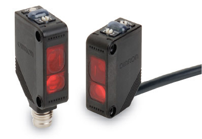
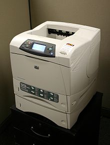
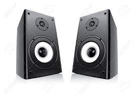
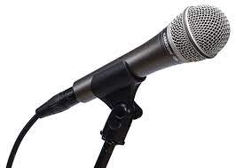

In this webpage, we will learn about 3 input & output devices (6 devices in total) & will help you make some desicions on buying devices for you
Input devices:
SensorOutput devices
Laser printerIn the broadest definition, a sensor is a device, module, machine, or subsystem whose purpose is to detect events or changes in its environment and send the information to other electronics, frequently a computer processor. A sensor is always used with other electronics.

Sensors are used in everyday objects such as touch-sensitive elevator buttons (tactile sensor) and lamps which dim or brighten by touching the base, besides innumerable applications of which most people are never aware. With advances in micromachinery and easy-to-use microcontroller platforms, the uses of sensors have expanded beyond the traditional fields of temperature, pressure or flow measurement,[1] for example into MARG sensors. Moreover, analog sensors such as potentiometers and force-sensing resistors are still widely used.Applications include manufacturing and machinery, airplanes and aerospace, cars, medicine, robotics and many other aspects of our day-to-day life. There are a wide range of other sensors, measuring chemical & physical properties of materials. A few examples include optical sensors for Refractive index measurement, vibrational sensors for fluid viscosity measurement and electro-chemical sensor for monitoring pH of fluids.
A sensor's sensitivity indicates how much the sensor's output changes when the input quantity being measured changes. For instance, if the mercury in a thermometer moves 1 cm when the temperature changes by 1 °C, the sensitivity is 1 cm/°C (it is basically the slope dy/dx assuming a linear characteristic). Some sensors can also affect what they measure; for instance, a room temperature thermometer inserted into a hot cup of liquid cools the liquid while the liquid heats the thermometer. Sensors are usually designed to have a small effect on what is measured; making the sensor smaller often improves this and may introduce other advantages
Main MenuA computer keyboard is a typewriter-style device[1] which uses an arrangement of buttons or keys to act as mechanical levers or electronic switches. Replacing early punched cards and paper tape technology, interaction via teleprinter-style keyboards have been the main input method for computers since the 1970s, supplemented by the computer mouse since the 1980s.
Keyboard keys (buttons) typically have a set of characters engraved or printed on them, and each press of a key typically corresponds to a single written symbol. However, producing some symbols may require pressing and holding several keys simultaneously or in sequence.[2] While most keyboard keys produce letters, numbers or symbols (characters), other keys or simultaneous key presses can prompt the computer to execute system commands, such as such as the Control-Alt-Delete combination used with Microsoft Windows.[3][4] In a modern computer, the interpretation of key presses is generally left to the software: the information sent to the computer, the scan code, tells it only which key (or keys) on which row and column, was pressed or released.

Laser printing is an electrostatic digital printing process. It produces high-quality text and graphics (and moderate-quality photographs) by repeatedly passing a laser beam back and forth over a negatively charged cylinder called a "drum" to define a differentially charged image.[1] The drum then selectively collects electrically charged powdered ink (toner), and transfers the image to paper, which is then heated in order to permanently fuse the text, imagery, or both, to the paper. As with digital photocopiers, laser printers employ a xerographic printing process. Laser printing differs from traditional xerography as implemented in analog photocopiers in that in the latter, the image is formed by reflecting light off an existing document onto the exposed drum.

Invented at Xerox PARC in the 1970s, laser printers were introduced for the office and then home markets in subsequent years by IBM, Canon, Xerox, Apple, Hewlett-Packard and many others. Over the decades, quality and speed have increased as the price has fallen, and the once cutting-edge printing devices are now present everywhere.
Main MenuA loudspeaker is an electroacoustic transducer;[1] a device which converts an electrical audio signal into a corresponding sound.[2] The most widely used type of speaker is the dynamic speaker. The sound source (e.g., a sound recording or a microphone) must be amplified or strengthened with an audio power amplifier before the signal is sent to the speaker.
Speakers are typically housed in a speaker enclosure or speaker cabinet which is often a rectangular box made of wood or sometimes plastic. The enclosure's materials and design play an important role in the quality of the sound. The enclosure generally must be as stiff and non-resonant as practically possible. Where high fidelity reproduction of sound is required, multiple loudspeaker transducers are often mounted in the same enclosure, each reproducing a part of the audible frequency range (picture at right). In this case, the individual speakers may be referred to as drivers and the entire unit is called a loudspeaker. Drivers made for reproducing high audio frequencies are called tweeters, those for middle frequencies are called mid-range drivers and those for low frequencies are called woofers. Extremely low frequencies (16Hz-~100Hz) may be reproduced by separate subwoofers.
A projector or image projector is an optical device that projects an image (or moving images) onto a surface, commonly a projection screen. Most projectors create an image by shining a light through a small transparent lens, but some newer types of projectors can project the image directly, by using lasers. A virtual retinal display, or retinal projector, is a projector that projects an image directly on the retina instead of using an external projection screen.
The most common type of projector used today is called a video projector. Video projectors are digital replacements for earlier types of projectors such as slide projectors and overhead projectors. These earlier types of projectors were mostly replaced with digital video projectors throughout the 1990s and early 2000s, but old analog projectors are still used at some places. The newest types of projectors are handheld projectors that use lasers or LEDs to project images. Their projections are hard to see if there is too much light.
Main MenuA microphone is a device – a transducer – that converts sound into an electrical signal. Microphones are used in many applications such as telephones, hearing aids, public address systems for concert halls and public events, motion picture production, live and recorded audio engineering, sound recording, two-way radios, megaphones, radio and television broadcasting. They are also used in computers for recording voice, speech recognition, VoIP, and for non-acoustic purposes such as ultrasonic sensors or knock sensors.
Several types of microphone are used today, which employ different methods to convert the air pressure variations of a sound wave to an electrical signal. The most common are the dynamic microphone, which uses a coil of wire suspended in a magnetic field; the condenser microphone, which uses the vibrating diaphragm as a capacitor plate; and the contact microphone, which uses a crystal of piezoelectric material. Microphones typically need to be connected to a preamplifier before the signal can be recorded or reproduced.
Main MenuI made this webpage for my Grade-6 school project
This is my first time creating html page. Kindly provide your suggestions and feedback to
my email ID: anthonybastian3108@gmail.com
Oh and for viewing my webpage, thank you. Hope you have a nice day
Main Menu